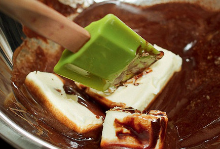
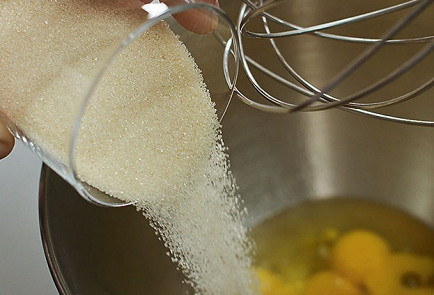
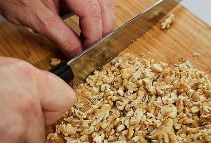
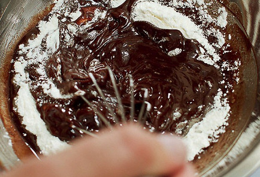
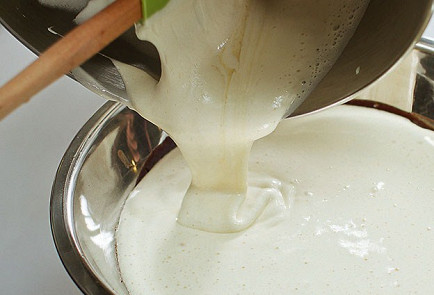
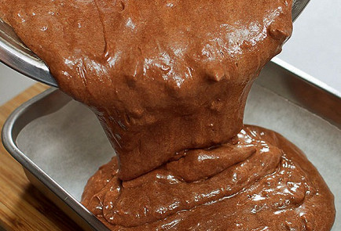
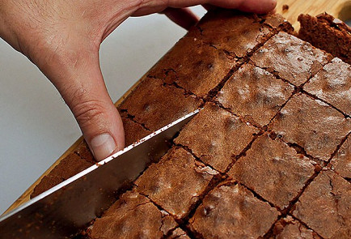
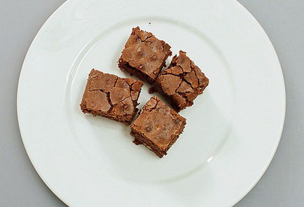

Брауни (brownie)
Один из самых популярных десертов в мире — брауни — был придуман в 1893 году на кухне легендарного отеля Palmer House в Чикаго. Этот пирог там пекут до сих пор по оригинальному рецепту, покрывая сверху абрикосовой глазурью. В домашней версии, впрочем, у брауни получается такая изумительная сахарная корочка, что глазировать ее было бы преступлением. У традиционных шоколадных брауни ванильный аромат, хрустящая корочка и влажная серединка. В торт также добавляют грецкие орехи или фисташки, а еще клюкву.
ЭНЕРГЕТИЧЕСКАЯ ЦЕННОСТЬ НА ПОРЦИЮ
-
Калорийность
676
ккал
-
Белки
10,3
грамм
-
Жиры
46,1
грамм
-
Углеводы
55,3
грамм
Инструкция приготовления
40 минут-

1. Шоколад разломать на кусочки и вместе со сливочным маслом растопить на водяной бане, не переставая все время помешивать лопаткой или деревянной ложкой. Получившийся густой шоколадный соус снять с водяной бани и оставить остывать.
-

2. Тем временем смешать яйца со ста граммами коричневого сахара: яйца разбить в отдельную миску и взбить, постепенно добавляя сахар. Взбивать можно при помощи миксера или вручную — как больше нравится, — но не меньше двух с половиной-трех минут.
-

3. Острым ножом на разделочной доске порубить грецкие орехи. Предварительно их можно поджарить на сухой сковороде до появления аромата, но это необязательная опция.
-

4. В остывший растопленный со сливочным маслом шоколад аккуратно добавить оставшийся сахар, затем муку и измельченные орехи и все хорошо перемешать венчиком.
-

5. Затем влить сахарно-яичную смесь и тщательно смешать с шоколадной массой. Цвет у теста должен получиться равномерным, без разводов.
-

6. Разогреть духовку до 200 градусов. Дно небольшой глубокой огнеупорной формы выстелить листом бумаги для выпечки или калькой. Перелить тесто в форму. Поставить в духовку и выпекать двадцать пять — тридцать минут до появления сахарной корочки.
-

7. Готовый пирог вытащить из духовки, дать остыть и нарезать на квадратики острым ножом или ножом для пиццы — так кусочки получатся особенно ровными.
-

8. Подавать брауни можно просто так, а можно посыпать сверху сахарной пудрой или разложить квадратики по тарелкам и украсить каждую порцию шариком ванильного мороженого.